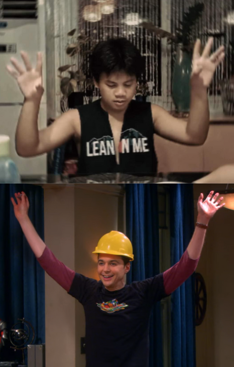

| MY ICT PORTFOLIO | ||||||
| HOME | ABOUT ME | 2ND QUARTER ACTIVITIES | BROWSER OUTPUTS | REFLECTION | ||
Hello Everyone! My name is Caleb Andrei D. Torio. I am a student in Las Pinas City National Science High School. I am from Grade 9 Family. I am good at the piano, infact I have done several recitals infront of large audiences. I like basketball, my friends call me Steve Harvey when I play because I always look confused, but I still play very well. I am very into movies. So much so that if anyone were to vaguely describe a movie, Id be able to tell which one it is. I have many friends in this school and I think I am a friendly guy. I enjoy interacting with people, I guess I am somewhat of an "extrovert". Video games are my strong point, I have a lot of knowledge when it comes to them. Playing them regularly helped me build a greater sense of observation, critical thinking and decision making. I am currently trying to catch up to honors as I was not able to make it last year. Wish me luck!! Please enjoy the portfolio!